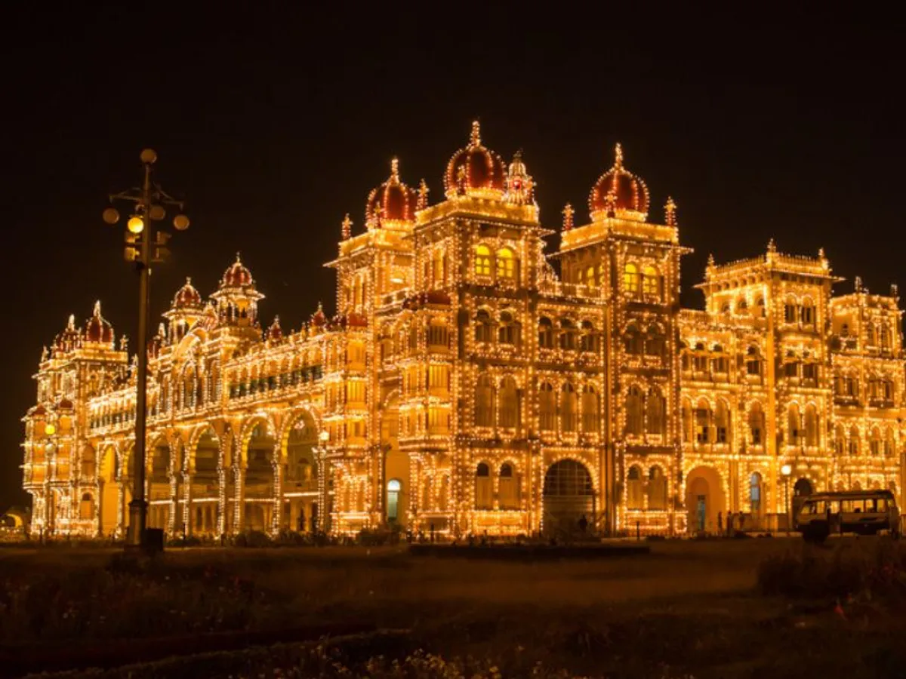
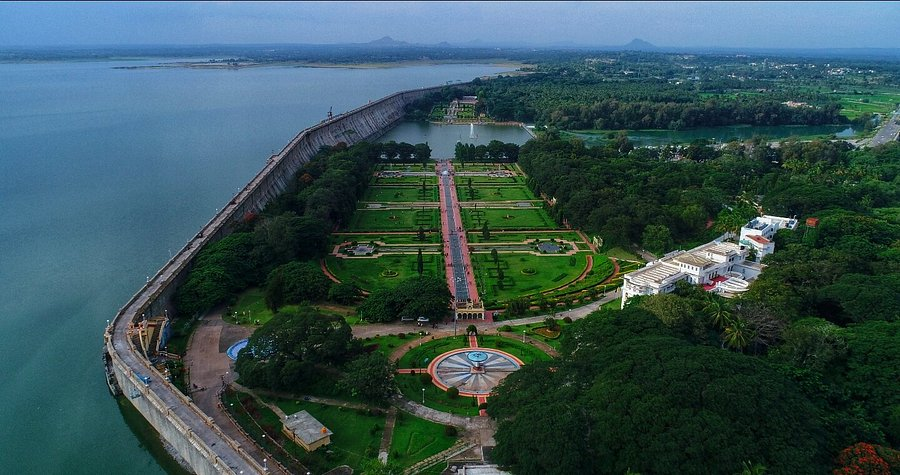

Top Locations

Mysore Palace
The historical palace and royal residence. Click to explore inside.

Chamundi Hill
Famous for the Chamundeshwari Temple and panoramic views. Click to explore.

Brindavan Gardens
Famous terraced gardens adjoining the Krishnarajasagara Dam. Click to explore.
Location Map
The map updates automatically when you click a card above.